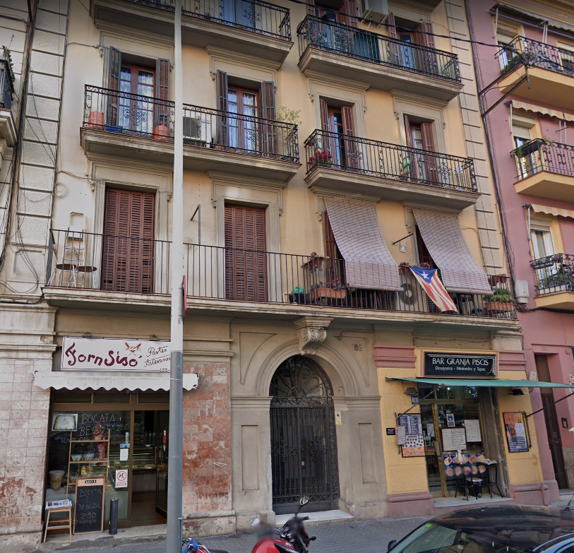
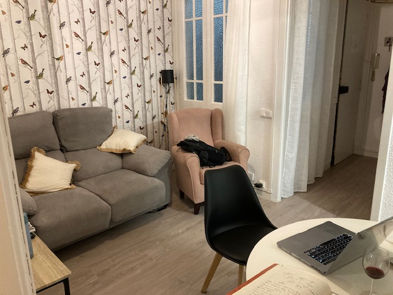
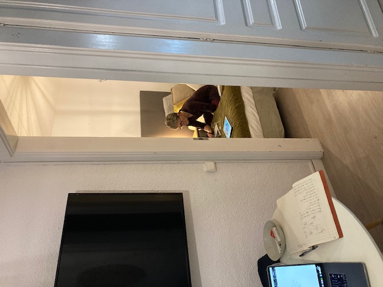
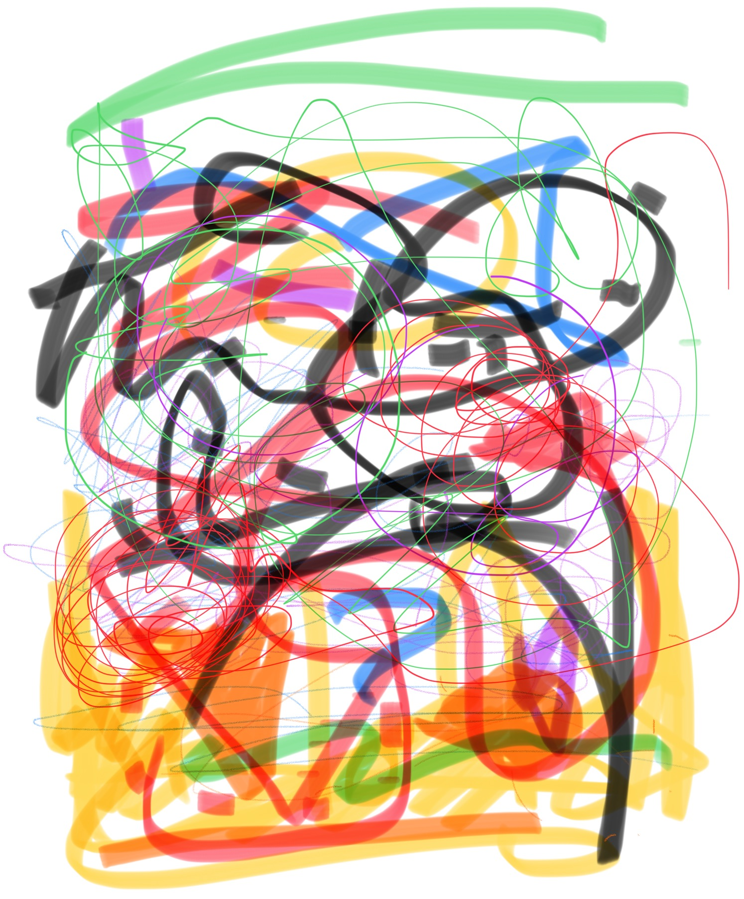
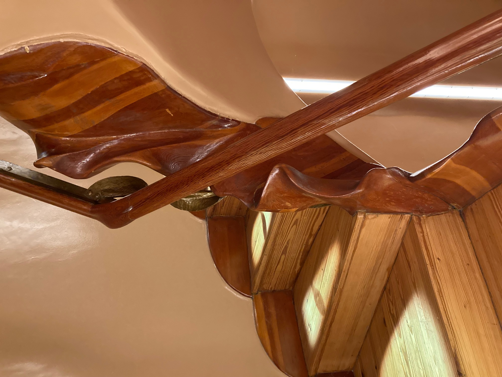
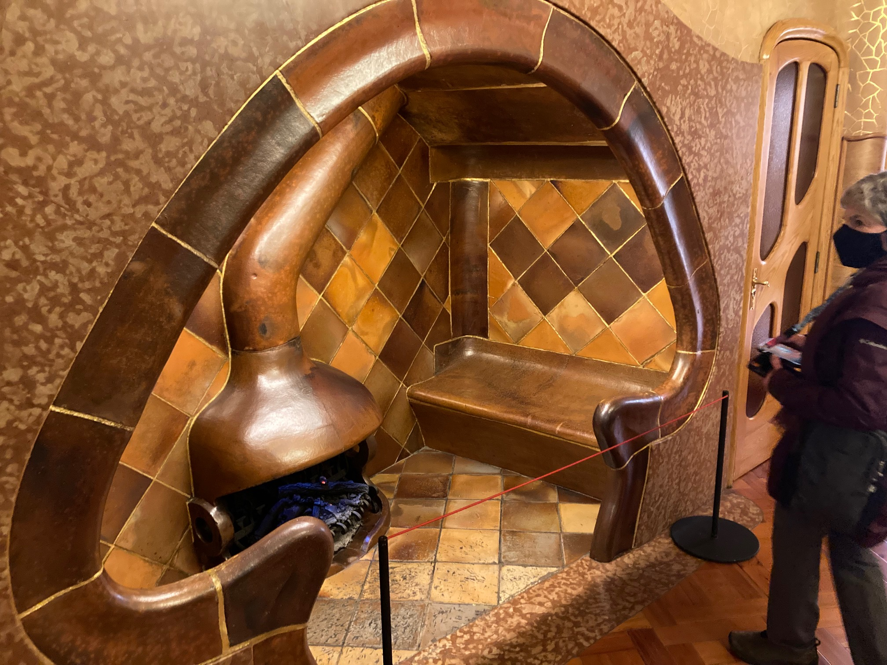
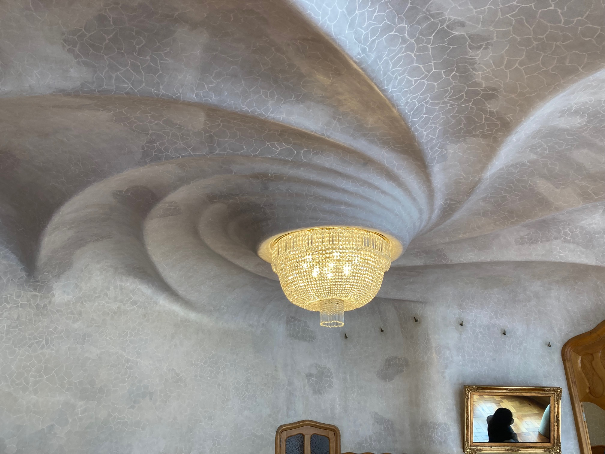
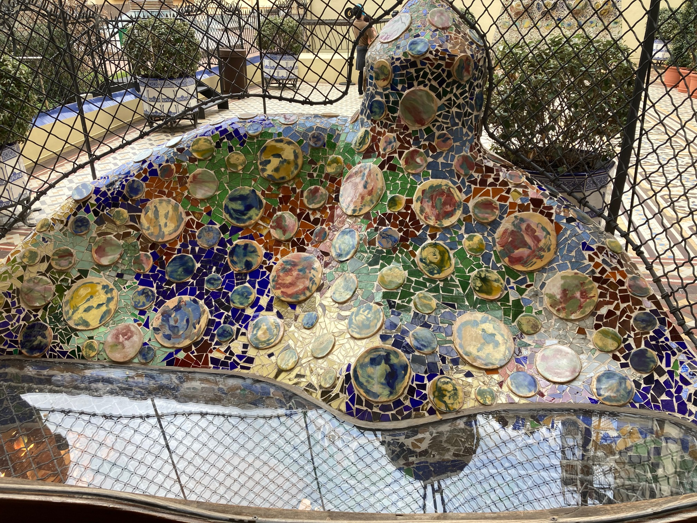
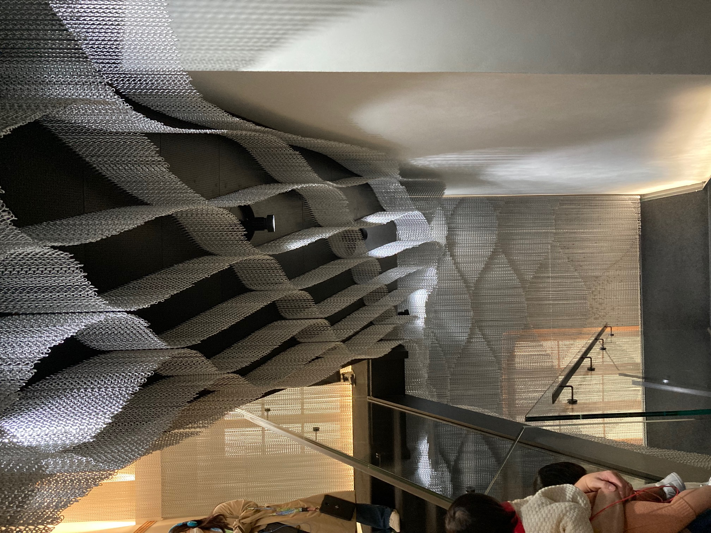
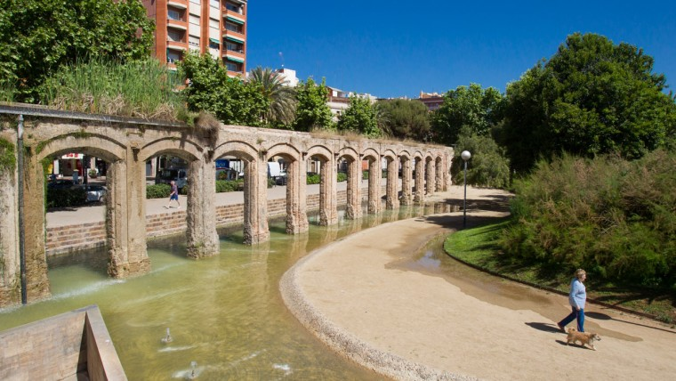

Pre-Program:¶
Because Dawn and I arrived a little early there were a busy few days over the weekend while we traveled and settled into our apartment. These entries run from Thursday March 18th 2022 when we got on the plane in Redmond through Sunday March 20th which was Dawn’s birthday.
Day 1 (19/3/2022)¶
Thursday/Friday (17th/18th): Long day of travel yesterday. Flights were smooth if a little cramped on the long hop from SEA to CDG (Paris) on Air France. Food on Air France wass pretty reasonable. Luckly the flight arrived 30 min early since we had a short connection (65 min) to our next flight. The last hop to BCN (Barcelona) was still Air France but we had to get from the 2E terminal to the 2F terminal. Says something that Air France has a webpage dedicated to getting from 2E to 2F as noted in previous post. Along the way we had to reclear security (long lines of anxious folks with less time to their flights than us). Dawn had a little water left in her hydroflask but when I went to dump it in the trash - no other option - the security folks blocked me. Only option they said was to suck it down or throw away the hydroflask. Suck it down I did – sheesh! We had about 40 min on the clock when we hit the line at security. We had 20 min left when we got to the next line which was also long to clear entry to Schengen. Had about 8 min left to our flight when we cleared Schengen entry (they felt sorry for us and just stamped the passport and waved us through). Hoofed it to the gate and thought we were late since there was nobody in the waiting area – they still let us board and we were the last ones. The couple behind us in the Schengen line didn’t make it - I really hoped they would. Had some leg room on last flight which helped. We had set up a Welcome Pickup for to get to our apartment and José was great about finding us in the taxi line (not where we were supposed to be).

Got to our apartment which, like many AirBnB’s, has an app (Akiles) for accessing both the building and the apartment. Not surprisingly the app needs to be connected to the web so we had to turn on cell data (which we had been avoiding if possible) and then everything worked fine. 3rd floor is 5 flights of steps up but there was a tiny elevator that we wondered if it would fail with all of our bags. Made it into the apartment. A couple of images below.
A small but workable living space….

The ‘spare’ room is the artist’s workspace…

Cozy but workable. Washing machine out on the back deck with the pigeons (pigeon is what in Spanish? - paloma, should have remembered from a pop song in my youth). Laundry line off the back deck. IF you drop something it appears that it will be gone forever seeing the inaccessible area it falls into and evidence of past laundry fails:)
Wifi, which seems critical, didn’t match information posted on door. Emailed Alba from Dawn’s account (more about that later) since it was still working hours in BCN. This is around 2;00 local time. She was able to reach the housing folks and they arrived in an hour after we had barely gotten unpacked. Wifi had rebooted to default name and password due to recent thunderstorms. Helpful guy checked to see if we could connect to wifi outside front door so we wouldn’t need cell data but no such luck. He immediately said he would get a physical key for the outside door in case we needed it and delivered it within a couple of hours. Very friendly and great English which we probably didn’t need but made it easier.
We went out to walk around the block to begin to learn where we were and shake off the jet lag. Identified a coffee place for Saturday morning and a few other places like the sweets shop, local pizza place, the hamburgesaria across the street, and the yoga studio. Had wine and tapas in the local Montferry ‘bar’ - 2 glasses of wine with huevos con hamon (2 eggs over bed of french fries and thin sliced ham) total 9€. Went back to apartment and collapse around 10:00 and slept until nearly 9 the next day.
Saturday: After nearly 12 hrs of sleep we got up and had hot showers and tea. Had a few snacks left from the trip to keep us going until coffee and croissants. On the other side of our block is Carrer d’Aragó which is a divided road where we are and has a wonderful pedestrian ‘park’ down the middle. Couples and singles are strolling or running or walking their dogs along the way. Lovely to see many older couples holding hands while walking. Had 3 café con leche with croissant for less than 7€ total. We orginally were thinking that cafe con tarta would coffee with some breakfast sandwich but were quickly shown the cheesecake tartas which was not our plan for breakfast.
After cafe and desayuno (pretty similar to what we usually have for breakfast) we walked NE on C/ d’Aragó and then up the Puente de Bac de Roda which bridges the train lines rather than a river. Met our first panhandler along the but still a remarkable apparent absence of the unhoused here. Walking back along the parque we heard a lot of activity in one corner of the parque just up from us so we walked over to find one end of the parque is set aside for bocce (apparently the name is the same in Spain as in Italy?). There must have been 30 or so folks (mostly our age or older it must be said) playing bocce. Men and women on every team. Probably 8 games going simultaneously. Serious skill was evident on all parts and lots of the joyful hassling of each other you would expect for long time friends. Perhaps it’s an every Saturday thing or maybe it’s only once a month. We will watch and see. For Barcelona it was cold today after rain in the very early morning. People just bundled up and played anyway. In Italy and South America most of the bocce balls I’m familiar with are phenolic (plastic). In France we have played the same game but with much smaller metal balls (I think it’s called pentaque). Here the balls appeared to be the same size as phenolic balls but were metal. The colors were shiny metal and a grey textured metal. I would expect these bocce balls to be a bit heavier and interestingly many players had a supermagnet on a cord that they used to ‘grab’ the ball off the ground without bending over. Never seen it before.
Found our way back home and did a little housekeeping and planning for the rest of the day. After some discussion we decided to see if walking over to the school and Dawn’s possible kettlebell studio was a doable thing. Hard to tell how far it would feel really though it seemed like it might be 4-6 km overall. On the city maps Carrer d’Aragó runs straight across town passing near the Sagrada Familia and Plaça Tetuan near the school. After having some lunch - pizza - at a local pub where they had a Portland Trailblazers jersey on the wall (I didn’t understand the explanation for why) we started walking. It was a lovely day for a walk - cool and cloudy. As we passed the Sagrada Familia there was an alley that we could look up directly at the unfinished central tower – should have taken a picture. I’ll try to remember this week. Mentally I thought this was about half way to the school but I had not gotten my landmarks clear in my head. We walked further along C/ d’Aragó and eventually finding ourselves at Casa Batlló on Passeig de Gràcia. This is one of the Gaudi buildings you hear about and there were large crowds on the sidewalk admiring the building. We passed on by but I realized that we had come several blocks further (7 actually) than we needed to. I was using maps.me which has downloadable maps that don’t require wifi or data access. Not quite as detailed as google maps but very effective. We looped around on Gran Via de les Corts Catellanes and walked back to Plaça Tetuan and then found the school building at Carrer Casp 30. From there down a block and over took us to Kettlebell Barcelona which is just off Carrer de la Marina on Carrer de Ausias March.
Working our way back towards home walking up Carrer de la Marina we found ourselves at a stunning building which turns out to be La Monumental. This is the former bullring which has become a museum since bullfighting is no longer practiced in Catalonia (2011 apparently). A great landmark for us to use to remember where to turn to get to the school and kettlebell. Up on Carrer d’Aragó if we had turned around when we were looking up the alley at the Sagrada Familia we would have been at just the right place - who knew – but the park confused me. We walked towards honme along the Gran Via..Corts Catellanes until we were blocked by construction near the Torres de Glòries (Torre Agbar). Turning to walk up the Carrer de los Castillejos we came upon The Axe Club which is an axe throwing club. Seems very welcoming and, dare I say it, something we gotta do. These might be our people! I had a student last year who was into axe throwing in Prineville. Come back to Oregon with a new skill:)
After that we finished our walk home, bought some wine and water, and here I am updating the blog before heading out for some late night tapas.
Tomorrow is the day of El Classico – the grudge fest between FC Barcelona and Real Madrid. This year Madrid leads the league (La Liga) and FC Barca is in 3rd place (all of which will make Josh Evans happy and David Villanueva sad) but anything can happen. The game is in Madrid so I suspect every bar in Barcelona will be filled with game watchers. This may be why the restaurant LantoI wanted to take Dawn to for her birthday tomorrow is closed for a private party. This wonderful sounding place is literally down the block from us.
For me all this wandering around helps me build an internal view of the city. For Dawn it is a different process. Overload was the name of the game for her and this is her visual representation of her day walking around Barcelona.

Day 2 (Sunday 20/3/2022) Dawn’s Birthday!¶
Because the restaurant I wanted to take Dawn to was closed today she asked if we could get up early and walk to Casa Batllo (the Gaudi designed house we saw on Passeig de Gràcia yesterday). She got tickets for the earliest entrance at 9:00. Maps.me estimates 47 min walk for 3.5 km – dead on as it turns out. We left the apartment around 7:15 and arrived just after 8:00. Found a coffee/panderia nearby and had a light breakfast. I bit more expensive than out in our working class part of town but only a little. Interesting to be closer in the city center and see many folks come to get take out coffee and croissants ordering in English and wanting custom changes. Counter person was very patient but worked only in Spanish though I’m sure she understood much of what was being said.
It was very apparent during our walk to Passeig de Gràcia that many small businesses have closed for the remainder of the weekend on Saturday night. Lots of small cafes etc were closed and chairs stacked and locked. Some were open but interestingly often Chinese or Greek restaurants were the only ones open. A few coffee places but we were grateful to find a nice one open.
Again we walked past the Sagrada Familia and I forgot to take a picture. Maybe tomorrow.
The audio tour (a trifle pricey at 45€ but I would say worth it) of Casa Batlló was wonderful and the level of creativity was hard to take in. Every aspect of the building was articulated by the artist and was a representation of his passion for the organic world in many many ways. The doors, the wall patterns, the nooks, the windows, the floors, were all an expression of his architectural vision. As a woodworker and building it was stunning to see the level of customization that was required at every point. In our modern world it is hard to picture a house built in the early days of electric lights and before modern water systems. Interior surfaces are hard line stucco that was tinted an painted in a pattern reminiscent of foam. Sometime the pattern lines were nearly invisible and sometimes they were 24 ct gold leaf(?). Every corner cabinet door and interior served the overall design. The interior tiles in the two 5 story atria graded in color from lightest at the bottom or darker blue at the top to distribute and reflect light more easily at the bottom. Interior windows near the bottom are larger to admit more light while higher up they are smaller to the rooms at every level have similar interior illumination. Impressively Guadi was also a consumate engineer and designed airflow and utility systems to maintain comfort for the residents before times of central heat and air conditioning. Totally amazing. Makes me imagine spending for a deeper tour of the Sagrada Familia later in our visit. No surprise that this building is a UNESCO World Heritage Site. Here are just a taste of some images.
A small staircase with custom woodwork everywhere…

A stunning fireplace nook with custom ceramic chimney…

This ceiling texture and scuplting is in the main salon. The foamy texture is everywhere in the house in different tones. The spiral sculpting of the plaster is only in this room.

A sample of the mosaic work which is everywhere at the house….

This is a tribute piece that is installed throughout the exit staircase from the house. The hanging material is standard household light chain (perhaps custom manufactured in aluminum) hanging in patterns that more and more complex as you make your way down the staircase. Kengo Kuma is the artist. The linked images are much better than mine.

We spent 90 min or so in Casa Batlló which climbs staircases to the rooftop 6 floors up and then back down. After that we headed home to take a short rest before trying to find a place for our midday meal and to do some shopping for the apartment before the city goes quiet for El Classico. As we came home we stopped at the bread/sweets shop next to our front door and got some barra rustica (like a french bagguette but a little broader and shorter). Also grabbed a dessert pastry. Total of 3.50€ which I could have done with the change in my pocket if I had remembered to bring it with me. Very tasty pastry, we will need to visit this shop a lot:)
We had our midday meal at Canape Lounge near us. Not sure what we were ordering but it was tasty and very filling. I still don’t need to eat anything else. A bit on the pricey side so we’ll probably pass in the future but provided the nourishment we needed. It was lovely to be in a restaurant and be the only whites in the place. Lots of youngish professionals and good energy.
After that hefty lunch we walked around and around the neighborhood looking for food stores. Stopped in a couple that either had very unhappy looking fruit and veg or had a 7-11 menu of chips and soda and candy. Disappointed we headed towards where I hoped the Mercat del Clot was on the map. A slightly older feeling part of town. We passed an Islamic Center along the way multiple other possible places to eat in the future. The Mercat was where I hoped it would be and for a moment it seemed like it might actually be open on a Sunday which seemed surprising. Turns out it was a Catalan Independence gathering. Lots of music and many young folks. Couldn’t see that anything in particular was going on but seemed energetic and safe. There was another lovely panederia at the edge of the market and a fruit and veg store where the fruit seemed very happy. We bought some fruit and veg as you would expect.
The Mercat del Clot is on the edge of the Parc del Clot which is a large community park built around the ruins of the old RENFE (trains) workshop. Very cool. Some folks were setting up a volleyball net in spite of the recent rain. Playing volleyball on a concrete court reminded me of Venezuela. No sand or hardwood here:)

Made our way back home and called it a day until El Classico at 9:00. Turns out we have some american sounding college students one level up and on the other side of the building. Heard them chatting on the back deck. Perhaps we will say hi if an opportunity presents itself.
Tomorrow all the remaining students will arrive and be sent off to their homestays. Not totally clear what the schedule is but we will be heading over to towards the school to check out the kettlebell studio anyway. Hopefully after I try and set up a local bank account – likely to be amusing to watch.